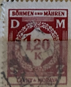
| SOURCE | TITLE| IMAGE MATCH | click to source page |
| Shutterstock | Singapore October 31 2019 Stamp Printed Stock Photo 1545952259 | Shutterstock | 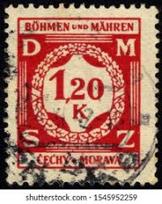 |
| eBay | CZECHOSLOVAKIA, BOHEMIA, MORAVIA:1941 SC#O7 Used Numeral AJ281 | eBay | 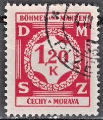 |
| Poppe Stamps | Poppe Stamps: Bohemia and Moravia, 1941, O70, Official Stamps, Numbers - Values And Letters - Characters - stamps for sale by theme and country | 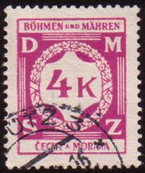 |
| GetArchive | 1939 amended Czechoslovakian passport to a Protectorate of Bohemia and Moravia sample - PICRYL - Public Domain Media Search Engine Public Domain Image | 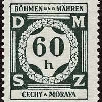 |
| Dreamstime.com | Isolated Czechoslovakia Bohemia and Moravia Stamp Editorial Photography - Image of moravia, bohemia: 291214777 | 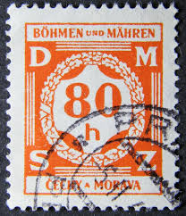 |
| Alamy | Postage stamp from Bohemia and Moravia in the Landscapes series issued in 1939 Stock Photo - Alamy | 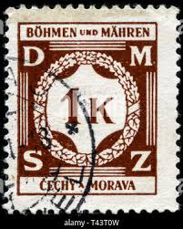 |
| Stampedia | BOHEMIA AND MORAVIA 1941 30 heller Official stamps, | Numeral | 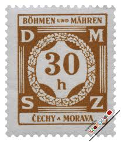 |
| PICRYL | 261 Protectorate of bohemia and moravia, Czechia Images: PICRYL - Public Domain Media Search Engine Public Domain Search | 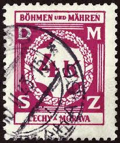 |
| HipStamp | Bohemia & Moravia #O7 Official Used | Europe - Czech Republic, Officials Stamp / HipStamp | 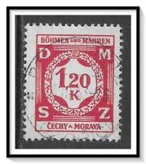 |
| Wikimedia.org | File:Stam 1941 DRBM MiNrD004 mt B002a.jpg - Wikimedia Commons | 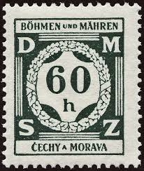 |
| Burda Auction | Official Stamps / German occupation of Bohemia-Moravia / Philately / | Burda Auction | 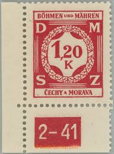 |
| eBay UK | Trees German Stamps for sale | eBay UK | 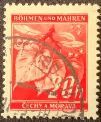 |
| Shutterstock | 7+ Hundred Bohemia Coat Arms Royalty-Free Images, Stock Photos & Pictures | Shutterstock | 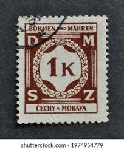 |
| Burda Auction | Official Stamps / German occupation of Bohemia-Moravia / Philately / | Burda Auction | 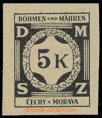 |
| eBay | Bohemia and Moravia, Scott O7, Official Stamp, 1941, used, 107904 | eBay | 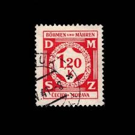 |
| Shutterstock | 73 1941 Numeral Royalty-Free Images, Stock Photos & Pictures | Shutterstock | 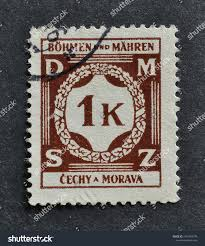 |
| Shutterstock | Istanbul Turkey January 25 2021 Czechoslovakia Stock Photo 2575651677 | Shutterstock | 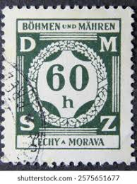 |
| TGW.cz | Service stamps | 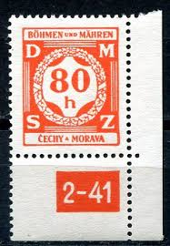 |
| Shutterstock | Estampillas de rehenes de la Checoslovaquia. Foto de stock 2052770921 | Shutterstock | 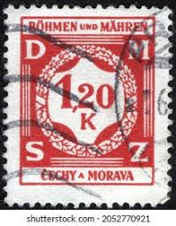 |
| The RainKey | German Colonies 1939 Bohmen and Mahren Numerical Stamp – The RainKey | 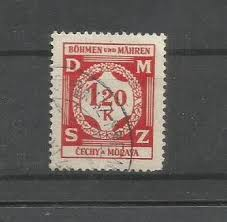 |
| HipStamp | Bohemia and Moravia 1941 - Scott #O7 * | Europe - Czech Republic, Officials Stamp / HipStamp | 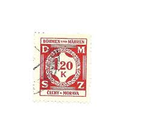 |
| The RainKey | Shop – The RainKey | 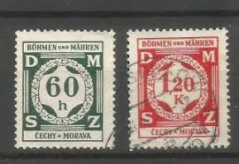 |
| eBay | CLASSIC 5K VF MNH GERMANY DEUTSCHLAND BOHMEN UND MAHREN K1 | eBay | 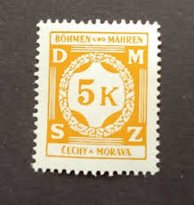 |
| eBay | Deutsches Reich 1923 con sovrastampa 2 Millionen Mark nuovo* | eBay | 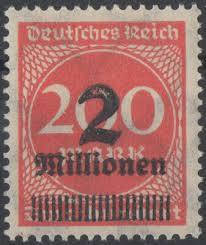 |
| Burda Auction | Potravní daň a jiné / Protektorát ČaM / Filatelie / Online aukce | Burda Auction | 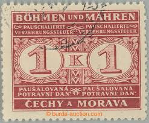 |
| What is the issue with the German 1936 stamp with Acid Gum? | 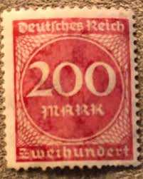 | |
| GermanStamps.net | 100 – 1,000 Mark Number & Circle Issues | GermanStamps.net | 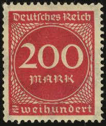 |
| Find Your Stamps Value | Value of deutsches reich 125 tausend stamps | 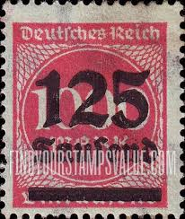 |
| Amazon.com | Amazon.com: Austria P79x sin montar Mint/Never Hinged ** MNH 1920 Sellos postales (sellos para coleccionistas) : Juguetes y Juegos | 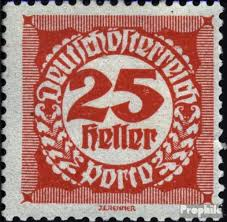 |
| PICRYL | Stamp Syria 1923 1.50pi on 30c - public domain postal stamp scan - PICRYL - Public Domain Media Search Engine Public Domain Search | 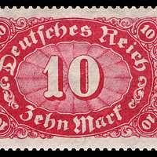 |
| Find Your Stamps Value | Value of deutsches reich 250 saufend stamps | 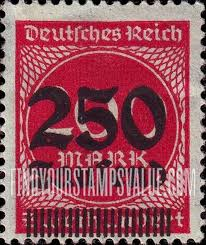 |
| Burda Auction | Official Stamps / German occupation of Bohemia-Moravia / Philately / | Burda Auction | 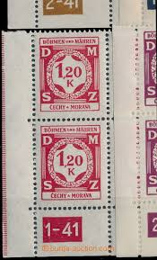 |
| R. Schneider Stamps | Germany Scott 200 variety Michel 248b ** expertized F/VF – R. Schneider Stamps | 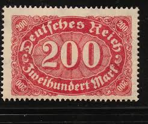 |
| pvoller.net | Bohemia and Moravia Postal History | 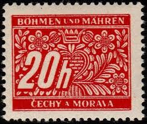 |
| Any value in these stamps? : r/stamps | 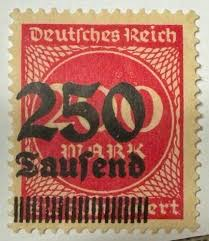 | |
| eBay | German & Colonies Stamps for sale | eBay | 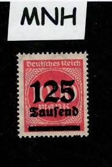 |
| eBay | germany deutsches reich stamps 200 mark Great shape | eBay | 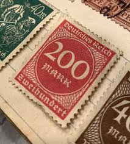 |
| eBay | Germany Stamps Bohemia Moravia OCCUPATION ZONES 1941 Block Mi. Nr. 7 (17638) | eBay | 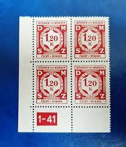 |
| Stamp Community Forum | Germany: Cancellation Premium. - Page 35 - Stamp Community Forum | 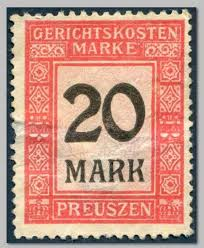 |
| ante armanini (antearmanini) - Profile | Pinterest | 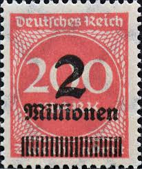 | |
| Wikipedia | Datei:DR-D 1923 78 Dienstmarke.jpg – Wikipedia | 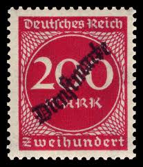 |
| University of Lincoln | German Food Tokens · IBCC Digital Archive | 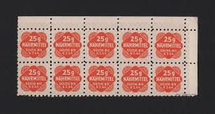 |
| eBay | Germany Stamps Bohemia Moravia OCCUPATION ZONES 1941 Block Mi. Nr. 6 (17641) | eBay | 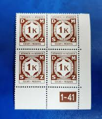 |
| Cherrystone Auctions | U.S. & Worldwide Stamps & Postal History - March 12-13, 2019 - GERMANY | 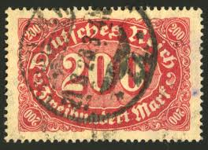 |
| pvoller.net | German Postal History and More | 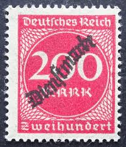 |
| eBay | Germany Stamps Deutsches Reich 200 Mark Mi. Nr. 248 a (20941) | eBay | 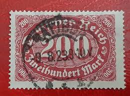 |
| eBay | GERMANY SCOTT # 3N9, USED, GREAT PRICE! | eBay | 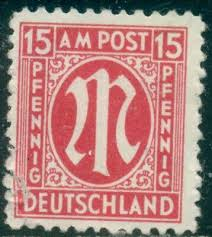 |
| GermanStamps.net | 5,000 – 250,000 Mark Inflation Overprints | GermanStamps.net | 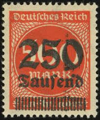 |
| Stamp Auction Network | catalog Level 3 | 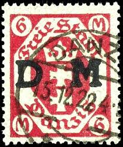 |
| stampphenom.com | Austria 1920 Postage Due Deutschösterreich – StampPhenom | |
| GermanStamps.net | Dienstmarke Overprints | GermanStamps.net | |
| Hi r/oldbooks. These are items from our family house in Germany. My uncle lived there until he died recently. It used to be my great aunt's and was built by my great | ||
| eBay | Germany, Scott 153, Numeral, 1921, MH, 108952 | eBay | |
| HipStamp | Germany Scott 271 | Europe - Germany & Colonies - Germany, General Issue Stamp / HipStamp | |
| HipStamp | Germany DANZIG Official 1922 WMK Honeycomb 20M MH* Stamp A27P7F21917- | Europe - Germany & Colonies - German Colonies & Territories, Stamp / HipStamp | |
| Alamy | Bohmen mahren hi-res stock photography and images - Alamy | |
| PICRYL | Madina - A painting of a mosque with a green dome - PICRYL - Public Domain Media Search Engine Public Domain Search | |
| Burda Auction | Official Stamps / German occupation of Bohemia-Moravia / Philately / | Burda Auction | |
| GetArchive | 33 Wurgwitz, Germany Images: PICRYL - Public Domain Media Search Engine Public Domain Search | |
| Stamp Community Forum | What Is Penetrated Perf? - Page 3 - Stamp Community Forum |
{kind=link}
{kind=link}